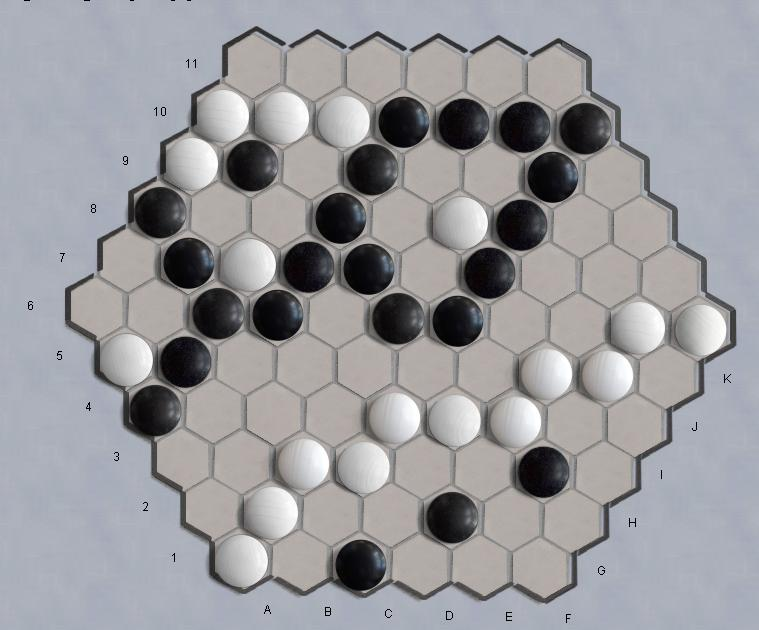

- The game starts on an empty board. Players
move in turn to place one stone on an empty cell. White moves first. The
second player is entitled to a swap.
- The game is won by the first player to complete a ring or a bridge or a fork. All of these are 'chains': closed connections of one color.
- A ring is a chain around at least one cell. The center cell can be empty or occupied.
- A bridge is a chain linking two corners
- A fork is a chain linking three sides. Corners do not belong to either side
|  |